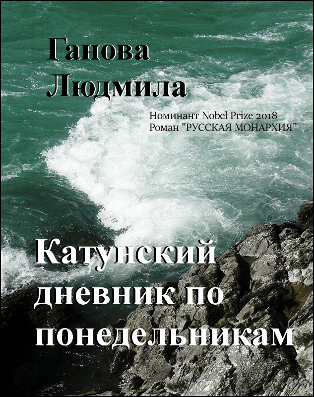
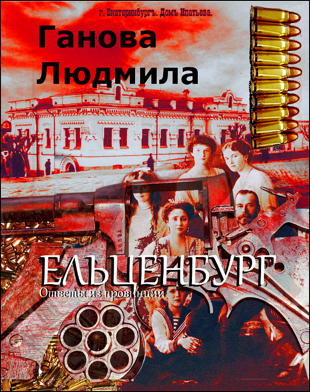
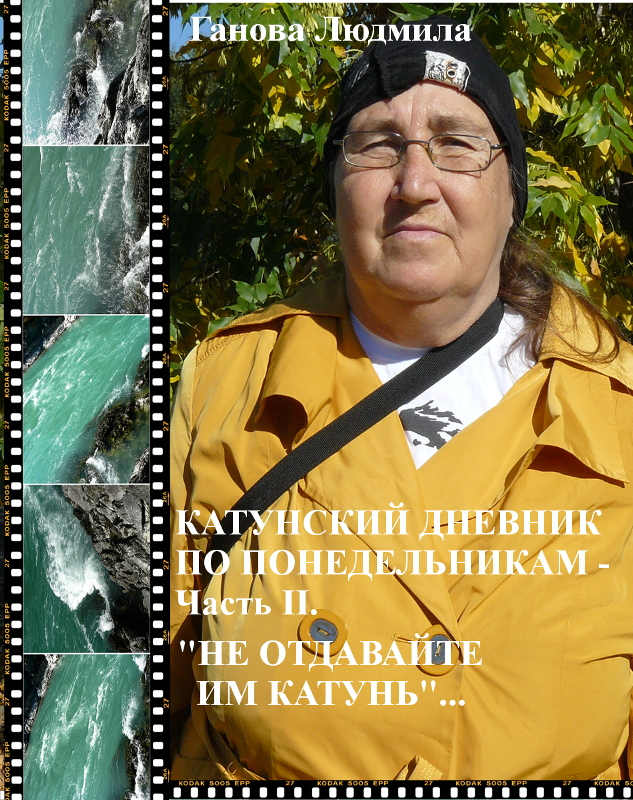

КНИГИ СОВРЕМЕННЫХ АВТОРОВ - ГАНОВА ЛЮДМИЛА, ЦУРИКОВ ИЛЬЯ, KET GUN

"Катунский дневник по понедельникам" Ганова Людмила
ПОЛУЧИТЬ КНИГУ

Роман "Ельценбург - Ответы из провинции" Ганова Людмила
ПОЛУЧИТЬ КНИГУ

Катунский Дневник по Понедельникам. Часть II. Ганова Людмила
ПОЛУЧИТЬ КНИГУ